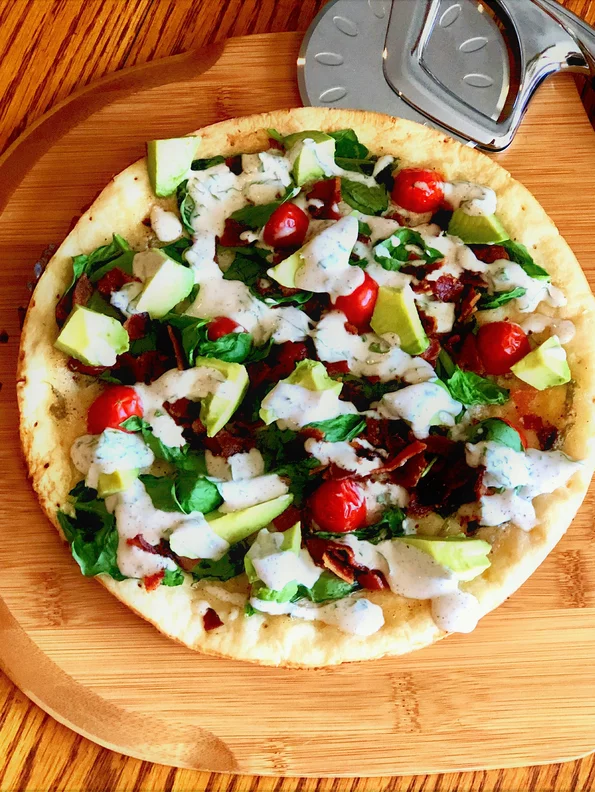

BLAT Pizza with Basil Mayo

Direction
Ingredients
- 1 CAULIPOWER® Cauliflower Pizza Crust
- ¼ cup mayonnaise
- 1 tablespoon red wine vinegar
- 1 tablespoon chopped basil leaves
- ¼ teaspoon sea salt
- ¼ teaspoon ground black pepper
- ¼ cup cherry tomatoes, halved
- ¼ cup fresh arugula
- ¼ cup fresh spinach
- 4 slices cooked bacon, crumbled
- 1 avocado, sliced (Optional)
Steps
- Preheat the oven to 425 degrees F (220 degrees C).
- Mix mayonnaise, red wine vinegar, basil, salt, and pepper together to make the basil mayonnaise.
- Drizzle pizza with 1/2 of the mayo mixture. Top with tomatoes.
- Bake in the preheated oven for 5 minutes. Top with arugula and spinach; sprinkle with bacon. Continue baking for 5 additional minutes.
- Top pizza with sliced avocado; drizzle with remaining basil mayonnaise.
Home